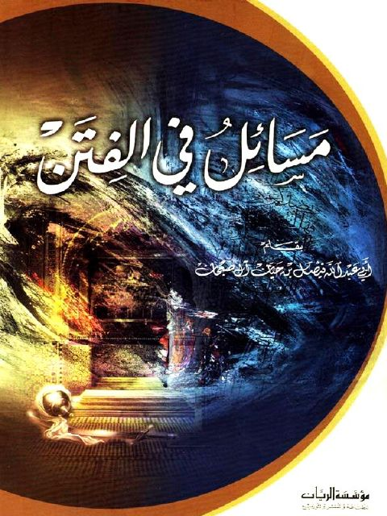

مسائل في الفتن
Authors: فيصل بن حيان آل صبحان
Publishers: مؤسسة الريان
Download Downloads need an internet connection.
- Published
- 2005
- Country
- بيروت، لبنان
- Edition
- 1
- Volumes
- 1
- Pages
- 82
- Type
- كتاب
- Category
- العقيدة والمذاهب والأديان
- Subcategory
- الفتن والملاحم
Description
**▫️ العنوان: مسائل في الفتن** ▪️ المؤلف: #فيصل_بن_حيان_آل_صبحان ▫️ الناشر: #مؤسسة_الريان ▪️ تاريخ النشر: 2005 ▫️ بلد النشر: بيروت، #لبنان ▪️ الطبعة: 1 ▫️ عدد الأجزاء: 1 ▪️ الصفحات: 82 ▫️ نوع الوعاء: #كتاب ▪️ التصنيف الرئيسي: #العقيدة_والمذاهب_والأديان ▫️ التصنيف الفرعي: #الفتن_والملاحم ۪